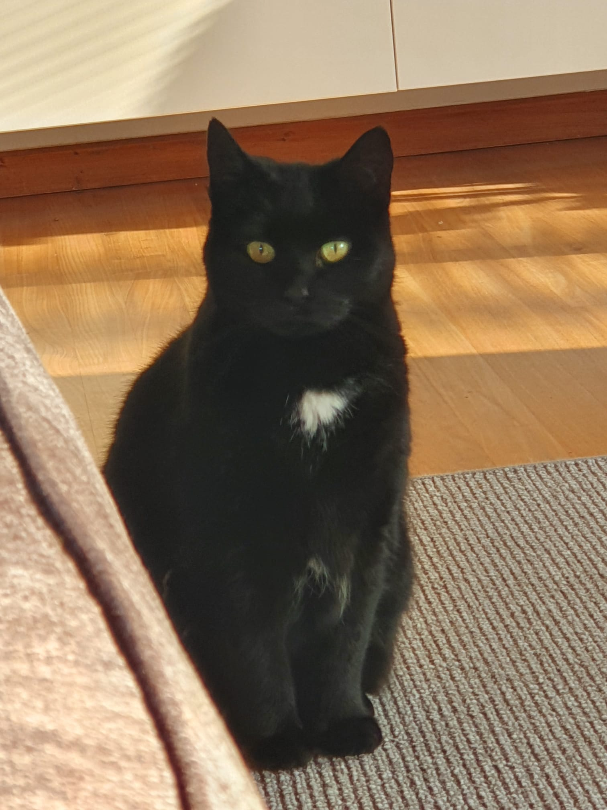

About me
My name is Tijn Visser and i'm a first year ICT student at the HZ.
I am from Terneuzen, on the other side. i'm seventeen and I graduated from HAVO last year.
In terms of hobbies, i'm learning piano, I like to play video games and I like to hang out with friends. i've also
begun to take an interest in coding since I have started this course.
My favorite genres of games are strategy games like RTS's or tactical shooters.
I also work at the local cinema in Terneuzen, it's a comfortable working environment and it's also nice ensuring
people have a good time.
My favorite games at the moment are:
- Rainbow Six Siege
- Factorio
- Magic:the gathering
- Forza
- Minecraft
At home we have a siberian husky named Ravi, a cat named Snoepie and another cat that doesn't really have a name. Of course I wouldn't forget about the real MVP, our aquariumfish.
